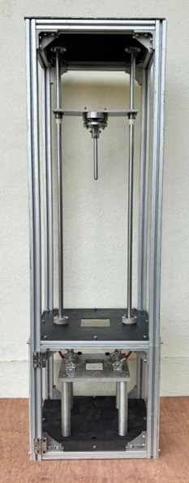
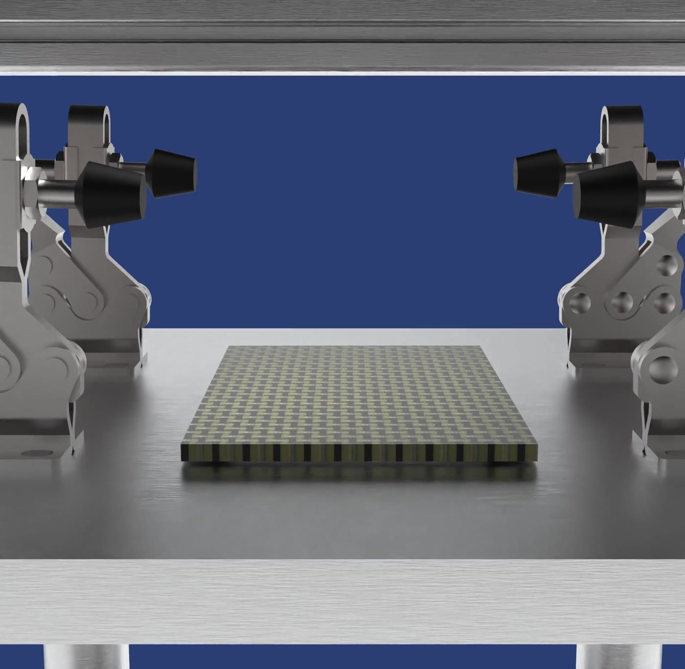
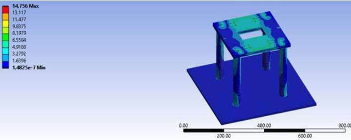
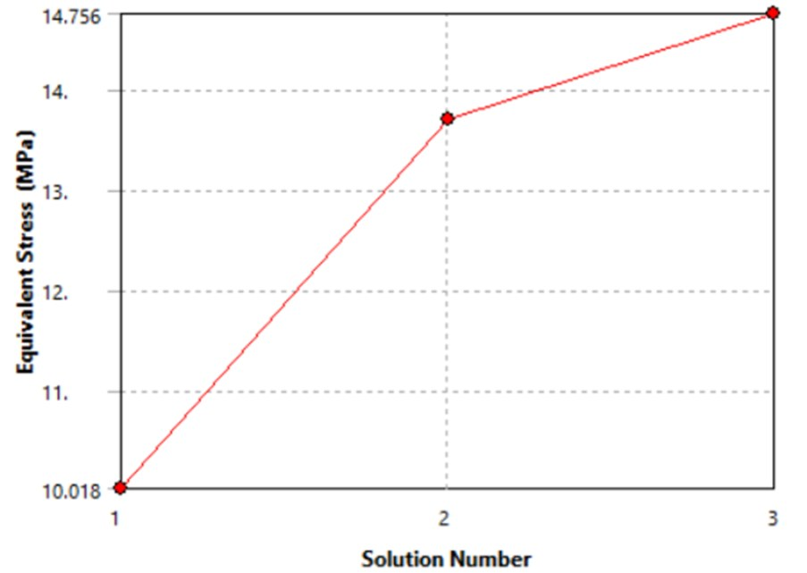
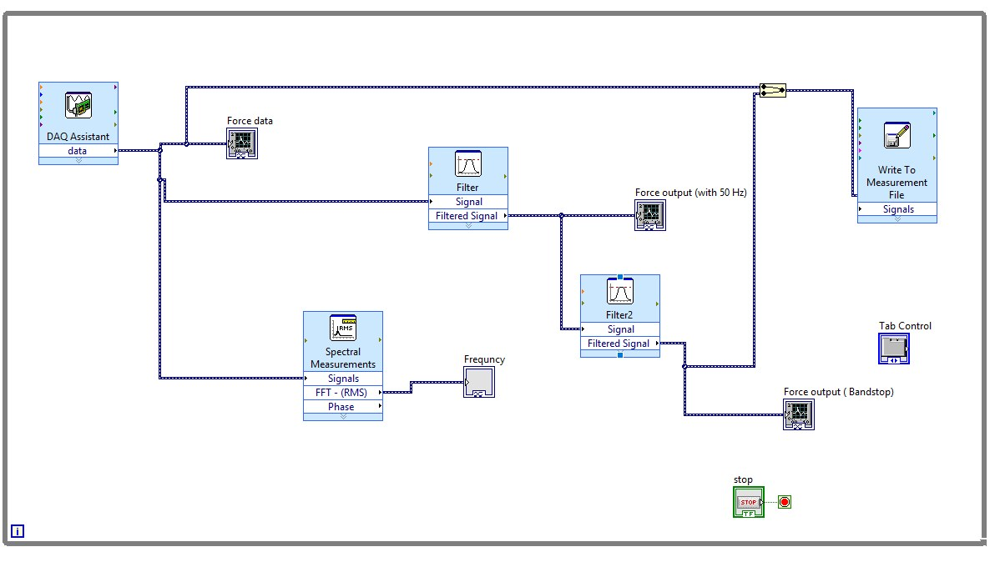
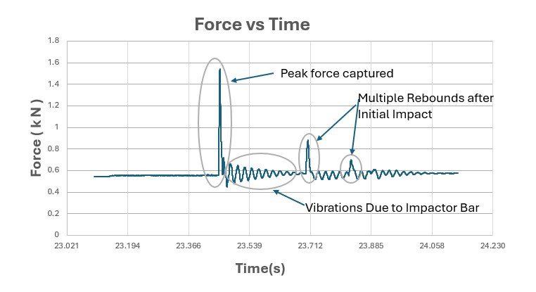
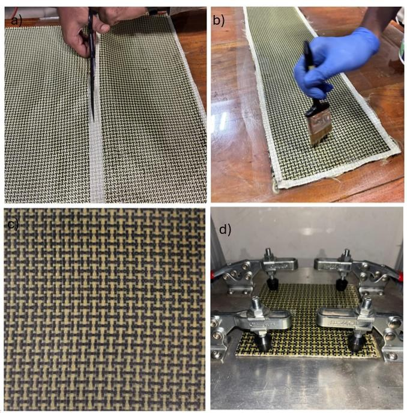
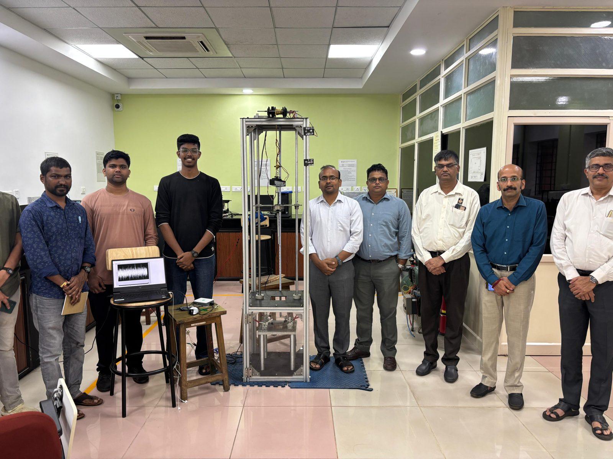

Low-Velocity Impact Test Rig
- Designed and built a drop-weight impact tester for composite panels to ASTM D7136
- Delivers 10–105 J at up to 4.47 m/s
- Validated against a commercial rig at NITK Surathkal, within about 11.27% on peak force
Overview
Composite panels in aircraft, cars and boats often take low-velocity hits from dropped tools and handling knocks. These hits can leave barely visible damage, such as delamination, matrix cracking and fibre breakage, that weakens a part over time. ASTM D7136 standardises how to test for it: a known mass with a hemispherical tip is dropped onto a clamped panel while the impact force is recorded.
Our goal was a cost-effective, easily maintained alternative to expensive commercial machines. It had to meet the standard, carry real-time sensors, and leave room for future test types.
Specifications
| Impact energy | 10–105 J |
|---|---|
| Impact velocity (max) | 4.47 m/s |
| Impact mass | 5–10 kg |
| Impactor | 12.7 mm hardened steel hemispherical tup |
| Force sensing | Pancake load cell, NI-9237 DAQ, 10–20 kHz |
| Machine size | 0.5 × 0.5 × 2 m |
Design

We started with a spreadsheet linking drop mass, height, velocity and energy to the ASTM D7136 minimums. We then modelled the full machine in SolidWorks, with interference checks and space reserved for sensors and wiring.
- T-slot aluminium frame, with corner plates added for rigidity and alignment
- Guided steel drop carriage on twin guide rods
- Toggle-clamp specimen fixture built to the standard's geometry
- Acrylic shielding and an enclosed specimen bay for operator safety
- Rubber feet and foam to damp rebound and noise

Custom parts were designed for low-cost manufacturing such as CNC machining, laser cutting, turning and 3D printing. Standard components were bought and integrated wherever possible. We produced detailed 2D drawings for vendors and held weekly design reviews.
Structural Analysis
We imported the SolidWorks assembly into ANSYS Mechanical as a STEP file. A 5,000 N remote load was applied at the centre of the specimen support, with the base plate fixed. Design targets were a load factor of safety of 1.6, a stress factor of safety of about 1.25, and deformation under 1 mm to keep results repeatable. The mesh used a 7 mm element size and was refined until stress changed by less than 10%.


| Solution | Nodes | Elements | Stress (MPa) |
|---|---|---|---|
| 1 | 45,676 | 24,686 | 10.02 |
| 2 | 129,397 | 78,063 | 13.70 |
| 3 | 378,909 | 249,966 | 14.76 |
At around 15 MPa, the support could be made entirely in aluminium without further optimisation.
Hoist
Instead of buying an expensive commercial hoist, we built one. A brushed DC motor drives a worm gear in a 3D-printed gearbox, which winds the carriage cable onto a spool.
- High gear reduction in a compact package
- A self-locking worm drive holds the load when power is cut, so no brake is needed
- Smooth, controlled lifting keeps operators' hands out from between the guide rods
Data Acquisition
The load cell feeds an NI-9237 bridge module. A custom LabVIEW VI samples at 10–20 kHz, applies a low-pass filter and a 50 Hz band-stop filter, shows the force live, runs an FFT, and logs everything to file.


We checked the peaks against slow-motion footage, then corrected the zero offset and converted the signal to newtons using the load cell's sensitivity and excitation voltage.
Testing and Results
We made aramid–carbon woven hybrid laminates by hand layup with epoxy, cut them to ASTM D7136 specimen size, and clamped them in the fixture.

We compared our rig against the commercial LVI setup at NITK Surathkal on the same specimen type at 78.89 J. Both machines produced the same force–time behaviour: a rapid build-up, a peak around mid-impact, and a gradual decline.
| Custom rig (MIT) | Commercial rig (NITK) | |
|---|---|---|
| Impact energy | 78.89 J | 78.89 J |
| Peak force | 939.19 N | 1,304.77 N |
| Error vs. commercial | ~11.27% | |
This error margin is acceptable for prototype validation. It makes the rig a practical tool for academic research, prototype development and early-stage material screening.
Future Work
- Interchangeable tups: an M8 thread on the impactor rod for hemispherical, diamond-point, conical and flat heads
- Velocity sensing: two LJ12A3-4-Z/BX inductive proximity sensors to measure tup velocity just before impact
